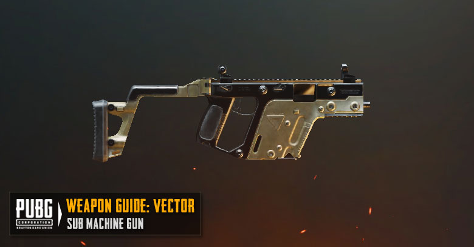
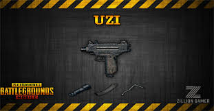
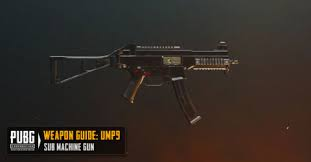

Vector

Vector fires .45ACP rounds with 13 bullets per mag. You can obtain this weapon from Ground Loots. Vector has single shot, double shot, and full auto mode. Vector is a fast, stable and mobile weapon it is really good in close range because of fast firing speed but with only 13 bullets it is pretty hard to secure a kill, an smg extended magazine is a must for Vector.
UZI

The Micro UZI is a submachine gun type weapon in BATTLEGROUNDS. A scaled down version of the original Israeli submachine gun designed by Major Uziel Gal in the early 1950s, first introduced in 1986 and exported to over 90 countries, it still sees active use in various conflicts around the world.
UMP

The UMP45 is a submachine gun type weapon in BATTLEGROUNDS. The UMP, short for Universal Machine pistol, is a submachine gun designed by Heckler & Koch. The UMP is the successor to the MP5, though both are in service to this day, an smg extended magazine is a must for Ump.